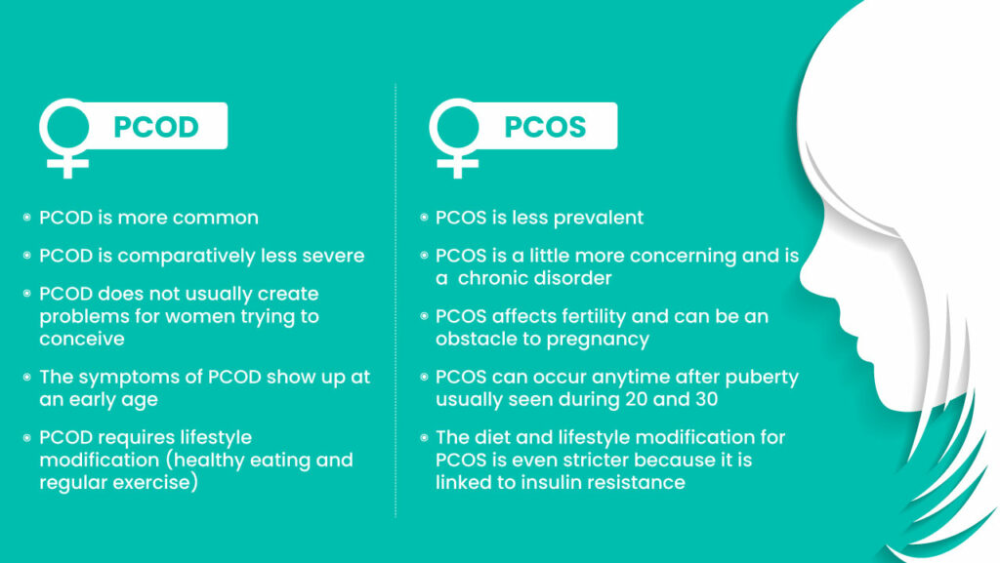

PCOS stands for Polycystic Ovary Syndrome, a hormonal disorder that affects women of reproductive age. It is characterized by the growth of multiple small cysts on the ovaries, which can cause irregular menstrual cycles, infertility, and other symptoms related to hormone imbalances.
Symptoms of PCOS
PCOS is a complex condition that can have a variety of underlying causes, including genetics and environmental factors. It is important to seek medical attention if you suspect you may have PCOS, as it can have long-term health implications if left untreated.
Precautions of PCOS
While there is no cure for PCOS, there are several ways to manage the symptoms and improve your overall health.

Maintain Healthy Lifestyle
Maintaining a healthy lifestyle is essential for women of all ages. Here are some tips that can help:
PCOS (Polycystic Ovary Syndrome) and PCOD (Polycystic Ovary Disease) are two different terms used to describe a similar condition affecting the ovaries in women. PCOS is a hormonal disorder that affects women of reproductive age. It is characterized by the presence of multiple cysts in the ovaries, irregular periods, excess androgen (male hormone) levels, and insulin resistance. PCOS can lead to various health problems such as infertility, acne, weight gain, and diabetes. On the other hand, PCOD refers to the presence of multiple cysts in the ovaries but without the presence of any other significant symptoms. PCOD is a milder form of PCOS and is not associated with hormonal imbalances or insulin resistance. In summary, PCOS is a more severe condition that includes multiple symptoms and hormonal imbalances, while PCOD is a milder condition that primarily involves the presence of multiple cysts in the ovaries.
